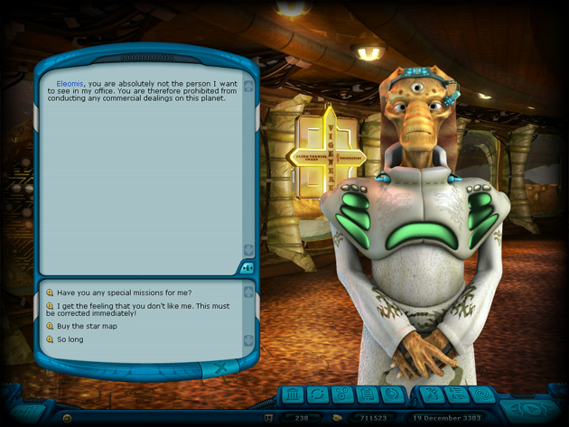

Ranger manual > Planet
screen > Government building (G)
|
Ranger manual > Planet
screen > Government building (G)
|
| Government building (G) In the government building the player meets an official of the race inhabiting this planet. Here the player can: • receive a governmental mission • receive precious hints from the area of trading • acquire a map of the nearest star systems • oil palm for sake of the better relations in the future • make bail for a prisoner of the local prison The communication with the official is organized in form of a dialogue, the answer options are located in the bottom part of the dialogue window. |

| Hint. In order to save the contents of the current
window, click the icon Government mission The government missions are an important component of the game, hence their completion brings a lot of good. Their bring money, awards, good attitude of this race or precious items (artifacts). Keep in mind that if you fail to meet the deadlines of the contract, you will hardly receive the promised for its completion, and the relation of the race from this planet will worsen. Hint. Before you choose the mission difficulty (and its deadline), choose the galaxy map to figure out, the amount of time you need to reach the start indicated in the mission. Always choose the government missions with a sufficient cushion of time for the case of contingencies! |